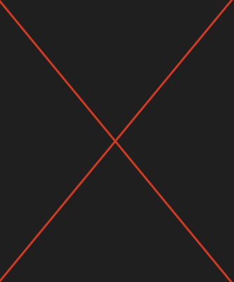
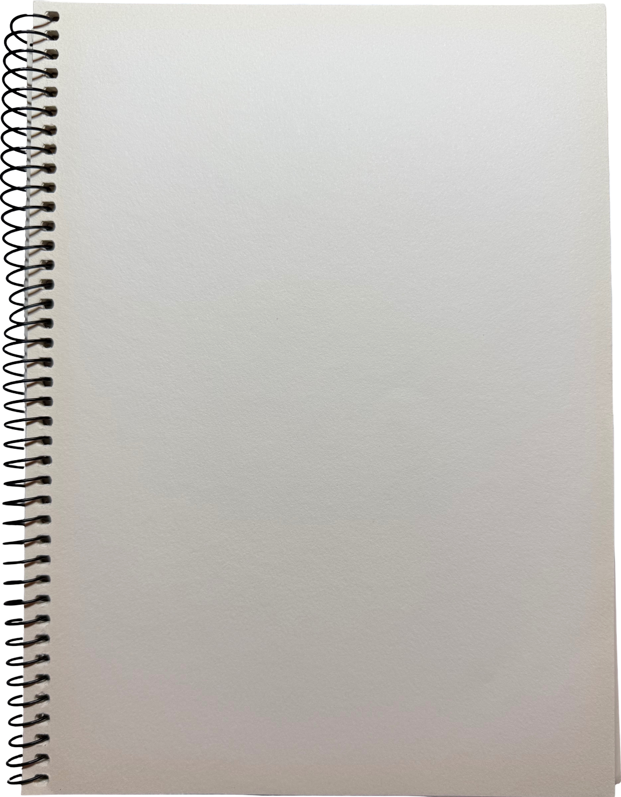

Welcome to my digital notebook! Here, you can find photographs, logs, and other resources I have from my various pursuits.
I'm currently a college student studying the biological sciences. In my free time, I like to dabble in other activities, such as art, photography, redstone, coding, and exploring nature!

